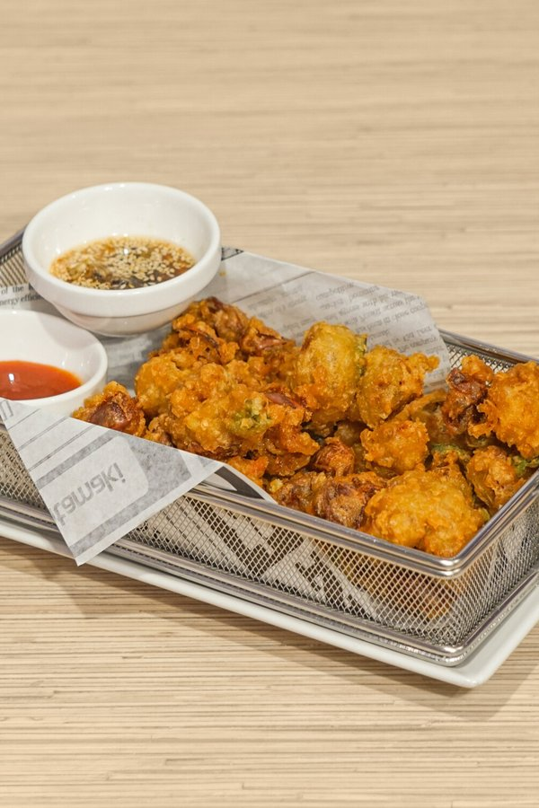
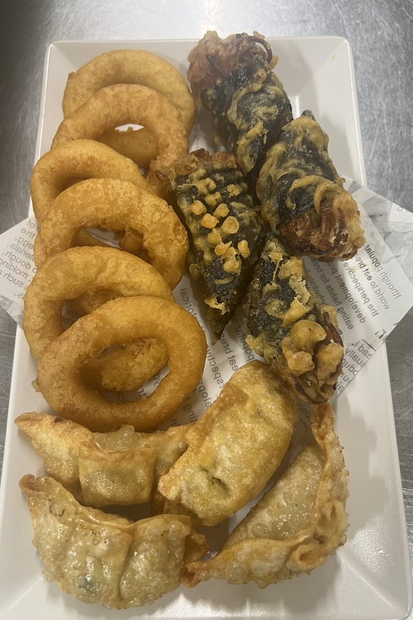
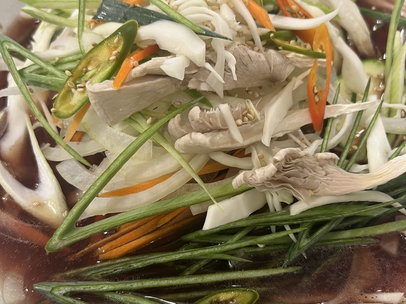
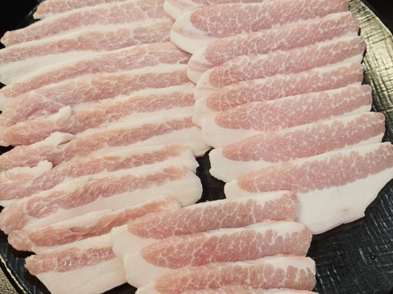
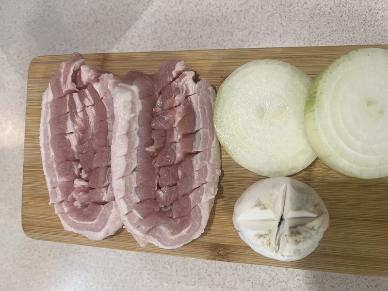
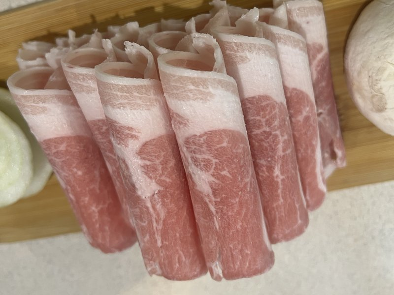
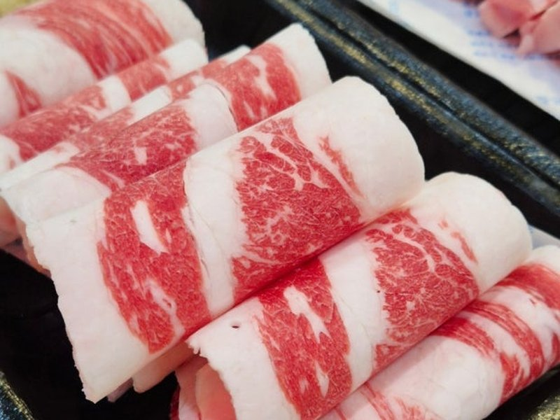

1.군만두Gun mandu (7 szt.)
20 złSmażone pierogi z kurczakiem i warzywami.Fried dumplings with chicken and vegetables.
Przystawki, zupy, dania z ryżem, grill, smażony kurczak i BBQ party — autentyczna kuchnia koreańska.Appetizers, soups, rice dishes, grill, fried chicken and BBQ party — authentic Korean cuisine.
Smażone pierogi z kurczakiem i warzywami.Fried dumplings with chicken and vegetables.

Domowe pierożki na parze z mięsem (wieprzowina i wołowina), tofu, warzywami i makaronem. Czas gotowania: 30 minut.Homemade steamed dumplings with meat (pork and beef), tofu, vegetables and glass noodles. Cooking time: 30 minutes.

Smażone krewetki w cieście z mąki pszennej.Deep-fried shrimp in wheat-flour batter.

Naleśnik z różnych rodzajów owoców morza wymieszanych z ciastem mącznym.A pancake made with assorted seafood mixed into a flour batter.

Cienko pokrojona wołowina smażona w cieście jajecznym.Thinly sliced beef pan-fried in an egg batter.

Danie z surowego mięsa wołowego z dodatkiem orzechów piniowych i jajkiem.Raw beef dish topped with pine nuts and egg.


Żołądek kurczaka smażony w głębokim oleju lub na patelni.Chicken gizzards, deep-fried or pan-fried.

Grillowana makrela.Grilled mackerel.

Plastry bulgogi wołowego z warzywami i makaronem ziemniaczanym w gorącym garnku.Sliced beef bulgogi with vegetables and glass noodles in a hot pot.

Kotlet schabowy z sosem na górze, daikon, sałatka z ketchupem i majonezem, ryż.Pork cutlet topped with sauce, daikon, salad with ketchup and mayonnaise, rice.

Panierowane filety z dorsza smażone w głębokim tłuszczu, aż będą chrupiące. Podawany z sosem tatarskim.Breaded cod fillets deep-fried until crispy. Served with tartar sauce.

Ciasteczka ryżowe duszone z ostro-słodką pastą gochujang, warzywa, kotleciki rybne, ugotowane jajko.Rice cakes simmered in sweet-spicy gochujang paste with vegetables, fish cakes and a boiled egg.

Fusion tteokbokki z sosem pomidorowym, mlekiem, śmietaną i boczkiem, tworząc pikantny sos gochujang.A fusion tteokbokki with tomato sauce, milk, cream and bacon, creating a spicy gochujang-based sauce.

Gotowany ryż, różne rodzaje warzyw, szynka i surimi, zawinięte w gim, podawane w małych plasterkach.Cooked rice, assorted vegetables, ham and surimi wrapped in gim (seaweed), served sliced.

Zupa z pasty sojowej z tofu, warzywami i mostkiem wołowym z ryżem.Soybean paste soup with tofu, vegetables and beef brisket, served with rice.

Bogata zupa z pasty sojowej z tofu, warzywami, mostkiem wołowym i ryżem.A rich soybean paste soup with tofu, vegetables, beef brisket and rice.

Pikantna zupa z tofu, warzywami, z ryżem.Spicy tofu soup with vegetables, served with rice.

Zupa kimchi, tofu, boczek wieprzowy lub tuńczyk i warzywa z ryżem.Kimchi soup with tofu, pork belly or tuna, and vegetables, served with rice.

Mielony mintaj gotowany w bulionie z grzybami, kiełkami fasoli, rzodkiewkami.Shredded dried pollack simmered in broth with mushrooms, bean sprouts and radish.

Pikantna zupa z mostkiem wołowym, owocami morza i warzywami z ryżem.Spicy soup with beef brisket, seafood and vegetables, served with rice.

Smażony ryż z kimchi, wieprzowiną i boczkiem.Fried rice with kimchi, pork and bacon.

Wieprzowina marynowana w sosie sojowym i grillowana, podawana z ryżem.Pork marinated in soy sauce and grilled, served with rice.

Boczek smażony z warzywami, podawany z ryżem.Pork belly stir-fried with vegetables, served with rice.

Marynowana wołowina z warzywami, podawana z ryżem.Marinated beef with vegetables, served with rice.

Smażone kalmary, warzywa podawane z ryżem.Stir-fried squid and vegetables, served with rice.

Smażony ryż z warzywami i krewetkami z sosem z pasty z czarnej fasoli.Fried rice with vegetables and shrimp in a black bean paste sauce.

Ryż z warzywami, wołowiną, jajkiem i ostrą pastą chilli.Rice with vegetables, beef, egg and spicy chili paste.

Koreańskie danie z wołowiny, przygotowane z mielonych krótkich żeberek wołowych.A Korean beef dish made from minced short beef ribs.

Zupa z kawałków ciasta pszennego gotowanych w bulionie anchois z ziemniakami, dynią.Soup with hand-torn wheat dough pieces simmered in anchovy broth with potatoes and pumpkin.

Żeberka wołowe długo gotowane na kości. Gęsty, bogaty bulion i delikatne mięso.Beef ribs slow-cooked on the bone. Thick, rich broth and tender meat.

Zupa gotowana na kościach i mięsie wieprzowym z dodatkiem plastrów mięsa.Soup made from pork bones and meat, served with sliced pork.

Pikantna zupa z pszenicznym makaronem, owocami morza, mostkiem wołowym i warzywami.Spicy soup with wheat noodles, seafood, beef brisket and vegetables.

Zupa z różnymi owocami morza i pszenicznym makaronem.Soup with assorted seafood and wheat noodles.

Makaron udon z chrupiącą smażoną potrawą w bulionie z płatkami bonito.Udon noodles with crispy tempura in a bonito-flake broth.

Makaron z mąki pszennej zawijany w bulionie z anchois.Wheat flour noodles served in anchovy broth.

Ostra zupa z pszenicznym makaronem, warzywami i jajkiem.Spicy soup with wheat noodles, vegetables and egg.

Pszeniczny makaron z sosem z pasty z czarnej fasoli, kawałkami wieprzowiny i warzywami.Wheat noodles with black bean paste sauce, pork pieces and vegetables.

Zupa z zimnym czarnym gryczanym makaronem z warzywami i mięsem wołowym.Cold soup with buckwheat noodles, vegetables and beef.

Zimny czarny gryczany makaron z warzywami, mięsem wołowym i ostrym sosem.Cold buckwheat noodles with vegetables, beef and spicy sauce.

Zimna zupa z makaronem gryczanym i warzywami.Cold soup with buckwheat noodles and vegetables.

Bezkostne nóżki kurczaka smażone w pikantnym sosie. Podawane z kulkami ryżowymi.Boneless chicken feet stir-fried in spicy sauce. Served with rice balls.

Słodko-kwaśna wieprzowina, smażona z warzywami.Sweet-and-sour pork, stir-fried with vegetables.

Ostre smażone czosnkowe krewetki, imbir, sos sojowy.Spicy stir-fried garlic shrimp with ginger and soy sauce.

Smażony kurczak z chrupiącymi warzywami w kwaśnym sosie sojowym, zielona i czerwona papryka.Fried chicken with crisp vegetables in a tangy soy sauce, green and red bell pepper.

Smażona pierś kurczaka, imbir, sos sojowy.Fried chicken breast with ginger and soy sauce.

Smażona wieprzowina z ostrym sosem pasty gochujang.Stir-fried pork in a spicy gochujang paste sauce.
*순살치킨가능 — boneless chicken available, dostępny kurczak bez kości*순살치킨가능 — boneless chicken available

Smażone skrzydełka kurczaka, sałatka z ketchupem i majonezem.Fried chicken wings with a ketchup-and-mayonnaise salad.

Koreańskie smażone skrzydełko kurczaka doprawione ostrym sosem sojowym, czosnkiem, cukrem.Korean fried chicken wings seasoned with spicy soy sauce, garlic and sugar.

Kurczak doprawiony sosem słodko-ostrym, czosnkiem, cukrem i orzechami ziemnymi.Chicken seasoned with a sweet-spicy sauce, garlic, sugar and peanuts.

Skrzydełka kurczaka przyprawione miodem, czosnkiem, masłem i innymi przyprawami.Chicken wings seasoned with honey, garlic, butter and other spices.

Duszone, przyprawione golonki z sosem sojowym.Braised, seasoned pork knuckle in soy sauce.

Duszona, sezonowana golonka wieprzowa z pikantnym sosem pastowym.Braised, seasoned pork knuckle with a spicy paste sauce.

Miękkie, pikantne nóżki wieprzowe z chrupiącymi warzywami i pikantnym sosem musztardowym.Tender, spicy pork trotters with crisp vegetables and a spicy mustard sauce.

Pikantny gulasz na bazie sosu sojowego z dodatkiem żeberek wołowych.Spicy soy-sauce-based braise with beef short ribs.

Gotowana karkówka wieprzowa na parze z grzybami i szczypiorkiem.Steamed pork neck with mushrooms and chives.

Tofu podawane razem ze smażoną wieprzowiną oraz smażonym kimchi.Tofu served with stir-fried pork and stir-fried kimchi.

Smażone na grillu plastry boczku wieprzowego, z czosnkiem i cebulą.Grilled pork belly slices with garlic and onion.

Smażone na grillu plastry karkówki wieprzowej, z czosnkiem i cebulą.Grilled pork neck slices with garlic and onion.


Ciasteczka ryżowe duszone z ostro-słodką pastą gochujang, warzywa, kotleciki rybne, jajka na twardo z miksem smażonych dodatków. Dodatki: 차돌 beef brisket / 치즈 cheese — +10 zł.Rice cakes simmered in sweet-spicy gochujang paste with vegetables, fish cakes, hard-boiled eggs and a mix of fried extras. Add-ons: 차돌 beef brisket / 치즈 cheese — +10 zł.

Smażone kiełki fasoli mung z mostkiem wołowym.Stir-fried mung bean sprouts with beef brisket.

Gotowane ślimaki (zwójki) z warzywami, ostry sos z makaronem.Boiled whelks with vegetables in a spicy sauce, served with noodles.

Jelita wieprzowe grillowane i podawane na gorącym talerzu.Grilled pork intestines served on a hot plate.

Jelita wieprzowe grillowane z pikantnym sosem pastowym, podawane na gorącym talerzu.Grilled pork intestines with a spicy paste sauce, served on a hot plate.

Grillowany węgorz.Grilled eel.

Smażona ośmiornica z ostrym sosem z pasty gochujang i syropem kukurydzianym.Stir-fried octopus with a spicy gochujang paste and corn syrup.

Koreańska zupa z szyi wieprzowej, ziemniaki i warzywa.Korean pork neck-bone soup with potatoes and vegetables.

Zupa z kotlecikami rybnymi.Soup with fish cakes.

Zupa z placków rybnych i golonki wołowej.Soup with fish cakes and beef knuckle.

Ostra zupa z wieprzowiną, szynką, kiełbasą, czerwoną fasolą, kimchi, tofu i makaronem. *소자 Small — 100 zł.Spicy soup with pork, ham, sausage, red beans, kimchi, tofu and noodles. *소자 Small — 100 zł.

Zupa z pasty sojowej z tofu, warzywami i mostkiem wołowym.Soybean paste soup with tofu, vegetables and beef brisket.

Bogata zupa z pasty sojowej z tofu, warzywami i mostkiem wołowym.A rich soybean paste soup with tofu, vegetables and beef brisket.

Zupa kimchi z boczkiem wieprzowym.Kimchi soup with pork belly.

Zupa z koreańskim puddingiem i częścią podrobów wieprzowych.Soup with Korean pudding and part of pork offal.

Pikantna zupa z grzybami i mostkiem wołowym.Spicy soup with mushrooms and beef brisket.

Danie z bulionu z kości wołowych, zwane sujitang.A beef-bone broth dish, also known as sujitang.

Pikantna zupa z owoców morza, wołowina z warzywami.Spicy seafood soup with beef and vegetables.

Gulasz z ośmiornicy, wołowych jelit i krewetek, doprawiony pikantnymi przyprawami.A braise of octopus, beef intestines and shrimp, seasoned with spicy seasonings.

Gulasz z ośmiornicy i delikatnej polędwicy wołowej jako głównych składników oraz różnych warzyw.A braise featuring octopus and tender beef tenderloin as the main ingredients, with assorted vegetables.

Pikantna zupa z jelita cienkiego krowy, przyprawami, warzywami, pszenicznym makaronem. *소자 Small — 140 zł.Spicy soup with beef small intestine, spices, vegetables and wheat noodles. *소자 Small — 140 zł.
Co najmniej 2 porcje, z wyjątkiem nr 75 (dostępne pojedyncze porcje)Minimum 2 portions, except No. 75 (single portions available)

Pokrojona wołowina, sos sojowy z warzywami i makaronem szklanym. Dostępne porcje pojedyncze.Sliced beef in soy sauce with vegetables and glass noodles. Single portions available.

Karkówka wieprzowa, grillowana.Grilled pork neck.

Boczek wieprzowy.Pork belly.

Cienko pokrojony mrożony brzuch wieprzowy.Thinly sliced frozen pork belly.

Plasterki mostka wołowego.Sliced beef brisket.
*탄산수 원하시면, 직원에게 알려주세요 — jeśli chcesz wodę gazowaną, poproś o nią pracownika obsługi.*탄산수 원하시면, 직원에게 알려주세요 — if you'd like sparkling water, please ask a staff member.


1) 레흐 프리미엄 (LECH PREMIUM)
2) 코젤다크 (KOZEL CERNY)1) 레흐 프리미엄 (LECH PREMIUM)
2) 코젤다크 (KOZEL CERNY)

Klasyczne soju: Chamisul / Jinro Is Back.Classic soju: Chamisul / Jinro Is Back.


Lemon juice, Jameson whisky, Schweppes.Lemon juice, Jameson whisky, Schweppes.